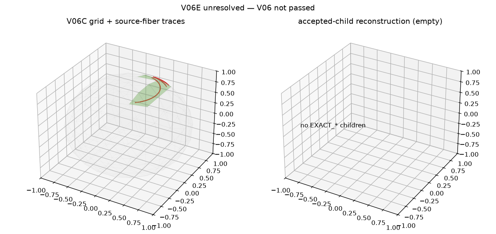

COVERED cells make the
miss metric unevaluable. Empty accepted children keep factorization
unresolved (not no valid recombination).
No EXACT_GLOBAL / EXACT_ON_COMPONENT children exist.
Descriptor discovery stays blocked (ADR-026). V06 program gate:
not passed. V07A held.| direct coverage | PARTIAL_COVERAGE |
|---|---|
| reconstruction coverage | PARTIAL |
| complete foliation | False |
| factorization | unresolved |
| fiber-hit / missed COVERED fraction | 10 / 0.000 |
| false-positive fraction | 0.013 |
| coverage comparison | evaluable — COVERED population nonempty; miss fraction defined |
| accepted children | 0 |
| Hausdorff (rad) | 0.4220953779491623 |
| icosphere level | 2 |
| item | met |
|---|---|
| independent_2d_source_parent | True |
| frozen_orientation_and_pointing_images | True |
| explicit_task_fiber_provenance | True |
| compound_parent_certified_or_rejected | True |
| source_fiber_cell_paint_generated | True |
| source_fiber_reconstruction_compared | True |
| child_reconstruction_only_accepted | True |
| factorization_status_explicit | True |
| coverage_qualified_by_declared_resolution | True |
| critical_unresolved_limits_explicit | True |
| complete_s2_coverage | False |
| accepted_child_factorization | False |
| parent_component_complete | False |

A0 · A1 · A2 · C · B · D1 · D2
Reproduce:
PYTHONPATH=src python -m grashof_workspace.spatial_experiments.v06e --outdir results/kinematic_decomposition/v06e